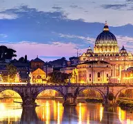
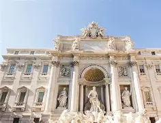
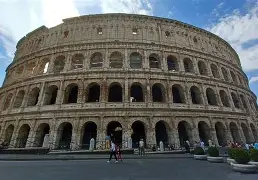
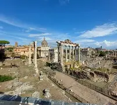
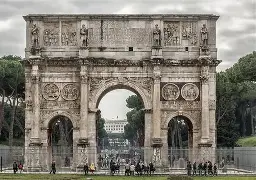

Rzym
Londyn :::::: Rzym ::::: Madryt

Rzym (wł. Roma, łac. Roma) – stolica i największe miasto Włoch, położone w środkowej części kraju nad rzeką Tyber i Morzem Śródziemnym, zarazem stolica regionu administracyjno-historycznego Lacjum (Lazio).
ZABYTKI:
FONTANNA DI TREVI

Fontanna di Trevi (wł. Fontana di Trevi) – najbardziej znana barokowa fontanna w Rzymie, w rione Trevi (R. II). Została zbudowana z inicjatywy Klemensa XII w miejscu istniejącej wcześniej fontanny zaprojektowanej przez Leona Battiste Albertiego z 1435 r. Zasila ją woda doprowadzona akweduktem zbudowanym w 19 r. p.n.e. przez Agrypę, tym samym, który zasila fontannę Barcaccia znajdującą się u podnóża Schodów Hiszpańskich.
KOLOSEUM

Koloseum (łac. Colosseum, wł. Colosseo), właściwie amfiteatr Flawiuszów[1] (łac. Amphitheatrum Flavium) – amfiteatr w Rzymie, wzniesiony w latach 70–72 do 80 n.e. przez Wespazjana i Tytusa – cesarzy z dynastii Flawiuszów.
FORUM ROMANUM

Forum Romanum (Forum Magnum) – najstarszy plac miejski w Rzymie, otoczony sześcioma z siedmiu wzgórz: Kapitolem, Palatynem, Celiusem, Eskwilinem, Wiminałem i Kwirynałem. Główny polityczny, religijny i towarzyski ośrodek starożytnego Rzymu, miejsce najważniejszych uroczystości publicznych.
SCHODY HISZPAŃSKIE

Schody Hiszpańskie (wł. Scalinata di Trinità dei Monti) – scenograficzne schody w Rzymie, w rione Campo Marzio (R. IV), rokokowe, wzniesione w latach 1723–1725 według projektu Francesca De Sanctisa i Alessandra Specchiego; schody prowadzą z pl. Hiszpańskiego do kościoła Trinità dei Monti. Mają 138 stopni i należą do najdłuższych oraz najszerszych w Europie
ŁUK TRIUMFALNY

Łuk triumfalny (łac. fornix, arcus, arcus triumphalis) – budowla w kształcie monumentalnej, wolno stojącej bramy, stawiana dla upamiętnienia ważnej osoby lub uczczenia ważnego wydarzenia, zwykle zwycięstwa militarnego. Pierwsze łuki triumfalne powstawały w starożytnym Rzymie, później budowle tego typu wznoszono w innych krajach i epokach historycznych.